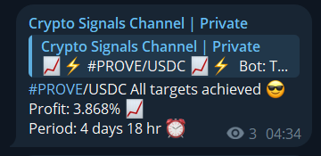
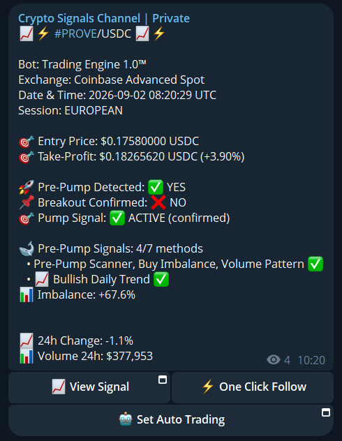
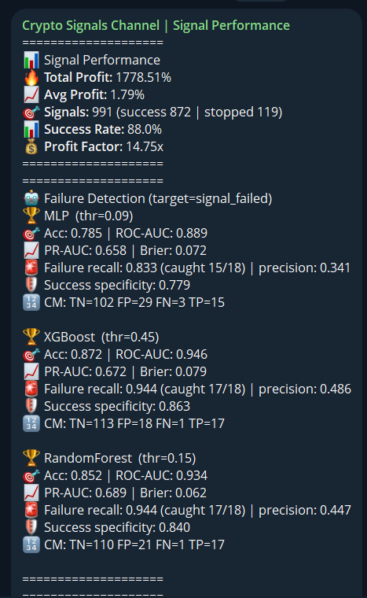
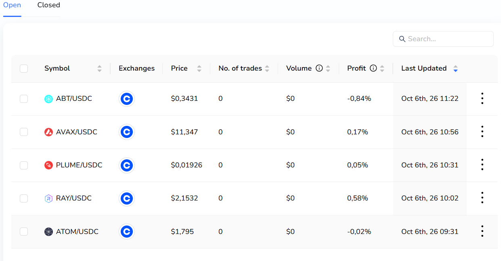

991
Total Signals
88.0%
Success Rate
14.75x
Profit Factor
+1778%
Total Profit
What it does
A multi-timeframe scanner that identifies accumulation phases in liquid markets before breakout, combining:
- Order-book microstructure analysis (13 detection methods)
- Multi-timeframe trend alignment (1D + 1H + 15m EMA200)
- Volume regime classification (dry-up / spike / accumulation)
- ML-based failure prediction (XGBoost · ROC-AUC 0.946)
- LLM risk validation (Gemini · 7-step checklist · fail-safe decline)
Design principle: Deterministic gate logic owns the decision. ML and LLM layers provide enrichment and veto. No model owns state.
Live Performance
| Total signals | 991 |
| Success rate | 88.0% |
| Profit factor | 14.75x |
| Avg profit per signal | +1.79% |
| Total profit | +1778.51% |
| Failure recall (XGBoost) | 94.4% (17/18) |
| Success specificity | 86.3% |
| ROC-AUC | 0.946 |
Screenshots
Click any image to zoom in.








Documentation
architecture.md
— Pipeline stages, gate logic, data flow, state model, failure modes
whale-engine.md
— 13 detection methods, direction taxonomy, aggregation logic
risk-management.md
— Multi-timeframe rule, fail-safe defaults, session memory
ml-pipeline.md
— Model metrics, failure detection, retraining cadence
performance.md
— Live stats, top instruments, weekly snapshots
signal-quality.md
— The 10-fix overhaul that stabilised signal quality
engineering-notes.md
— Trade-offs, lessons learned, stack summary
Source code is private. This page documents architecture and design decisions only.